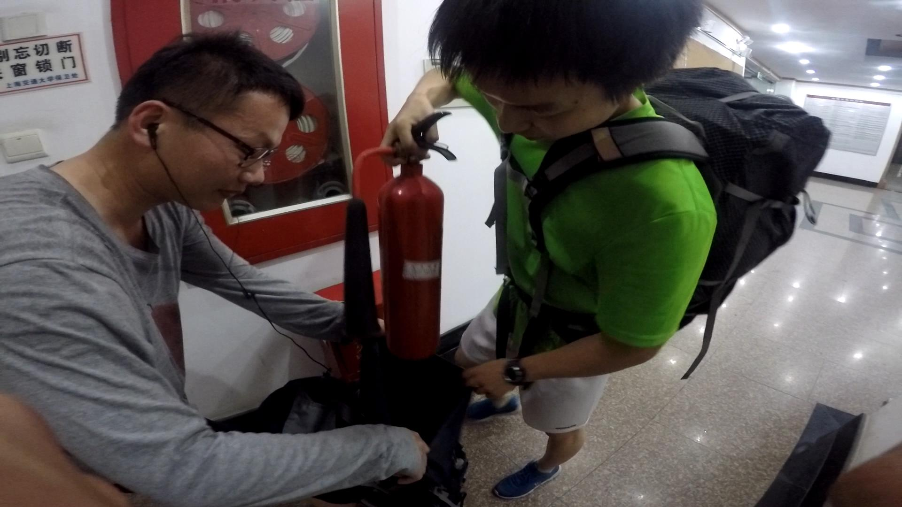
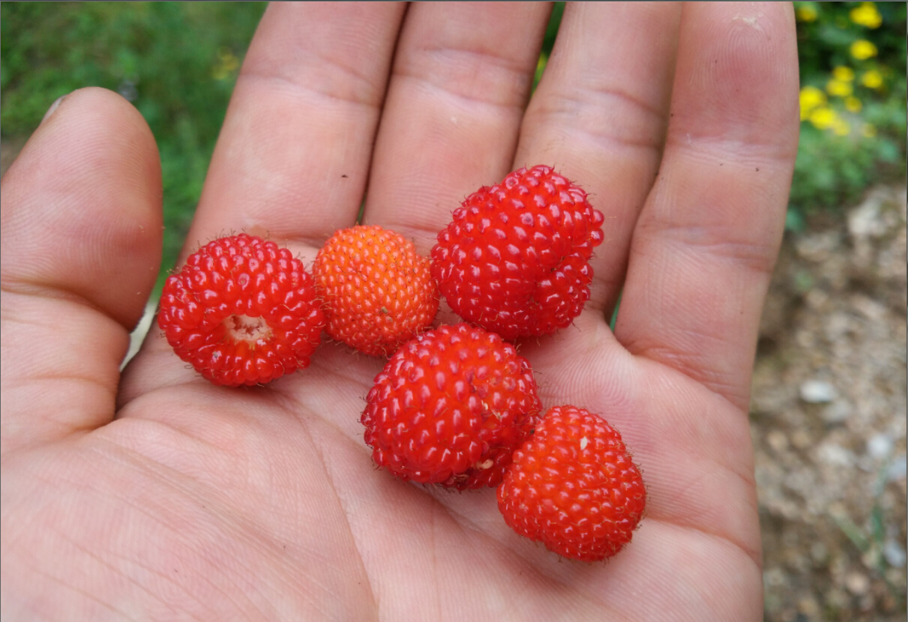
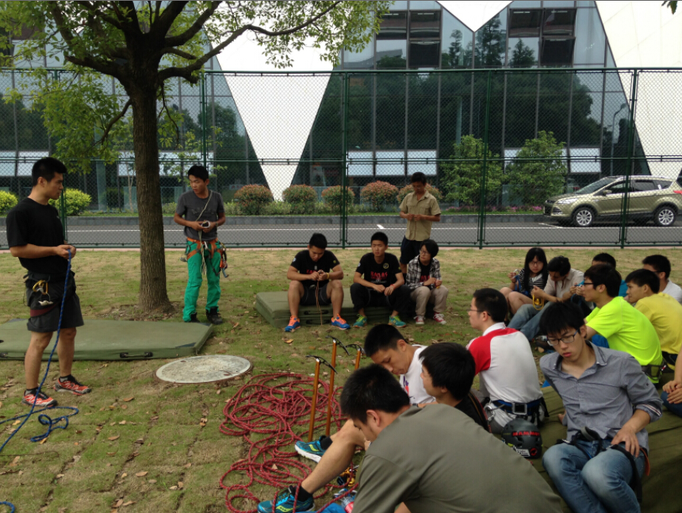
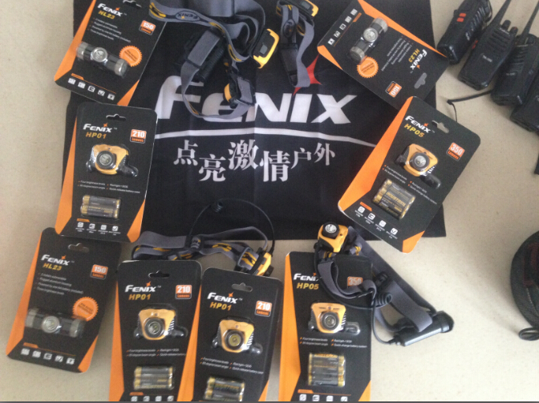
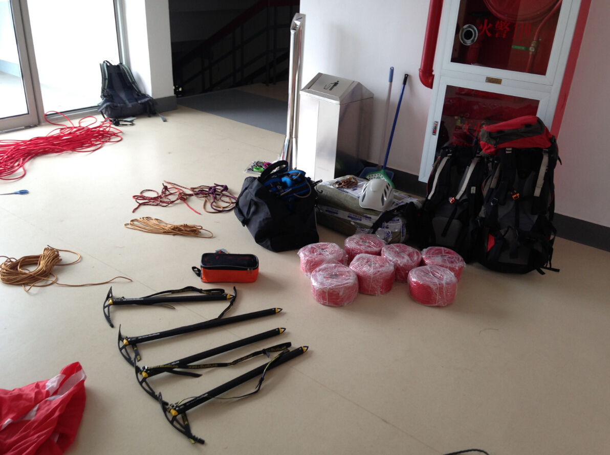
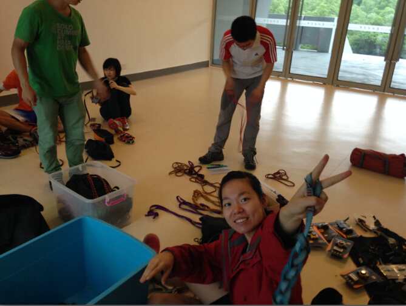
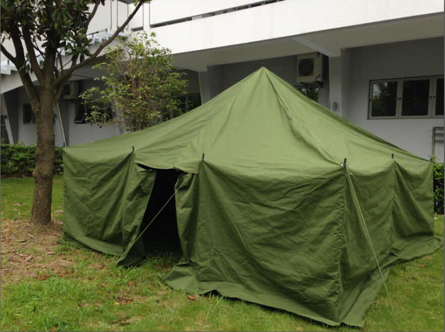
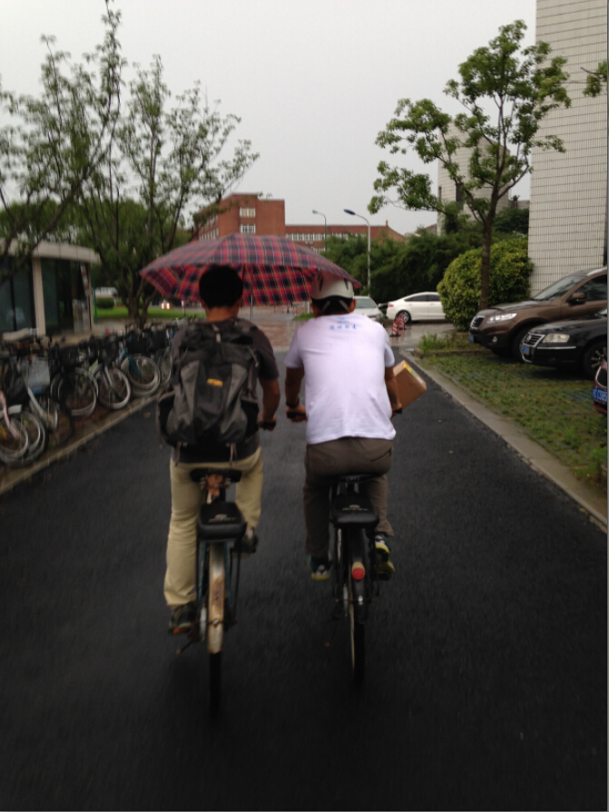

发信人: crazycams(嗡嗡嗡), 信区: outdoor
标 题: 2015半脊峰登山日记（1）—— by zcw
发信站: 饮水思源 (2015年11月17日00:03:46 星期二)
十月末的魔都，似乎已经提前进入了初冬，大起大落的气温让人不禁一周之内体会四季变
迁。难得空闲的周五晚上，正值本该狂欢的万圣夜，却一个人猫在冰冷的寝室做着不知道
什么时候能做好的视频。看着晓远在BC板房里种种卖萌，嘴角不自觉地浮起一丝微笑，突
然决定还是写点东西。在视频漫长的预渲染的空闲时间，让思绪重新回到7月那个难忘的川
西高原。
也记不起是什么时候大家说要一起登山了，也许从去年的十月开始？亦或是冬训结束？至
始至终，登山这个梦就萦绕在心头，久久不能散去。
登山队从一开始组建就是充满戏剧性的，听说一开始有将近20人报名，不禁感叹今年要发
达了。在正式训练之前开了两次会，但是人一次比一次少，等到开始正式训练，只剩8人(
笑)。
繁忙的初夏，本该是个谈情说爱的季节，我们却在物理楼和南体挥汗如雨，肆意挥洒着青
春。
 screen.width - 200){this.width = screen.width - 200}">
（爬楼的时候小怪兽给森哥装灭火器）
 screen.width - 200){this.width = screen.width - 200}">
（三尖、清凉峰拉练时山脚下的覆盆子）
 screen.width - 200){this.width = screen.width - 200}">
（巅峰户外学校的高校登山技术公益培训）
仓库的装备翻来覆去整理了好几次，尽量想办法精简着。大伙儿开心地截绳子，做牛尾，
调冰爪，盘算着进山的日子。梅雨季也没什么好期待的，望着绵绵大雨发呆，期待着进山
的时候可别遇到这种天气。
 screen.width - 200){this.width = screen.width - 200}">
（这次有FENIX赞助的一批头灯）
 screen.width - 200){this.width = screen.width - 200}">
（在仓库整理路绳冰镐）
 screen.width - 200){this.width = screen.width - 200}">
（大家在仓库调冰爪）
 screen.width - 200){this.width = screen.width - 200}">
（本来计划在透明梦柯大本营使用的工棚帐）
 screen.width - 200){this.width = screen.width - 200}">
（无题）
然而，老天给我们开了一个大玩笑。拿不到学校的知情函，透明梦柯的计划泡汤，留给我
们的只有两个选择，要么换山，要么以个人名义注册，推迟攀登计划（然而就没有火车票
了）。没想到清华12年的情况居然也发身在我们身上了。谁也不想就这么放弃了，半脊就
半脊吧，碰巧上海到成都的动车票源充足。刚刚做好了打算，结果教练那里又出岔子了，
之前联系好的两位教练由于协作资格证过期，无法在川登协进行注册；再加上要以个人攀
登名义注册，需要找到一家公司作为挂靠单位……
—————————————此刻内心是奔溃的分割线——————————————
离出发还有不到5天，这个时候再去联系教练希望非常渺茫。我和小怪兽几乎翻遍了大大小
小高山协作公司的联系方式，大多都因为日程已经安排好了而拒绝了我们，少部分待定，
然而不确定对我们来说就意味着无法按时出发，毕竟在登协注册还需要时间。那两天因为
这个事，我们俩无心他事。也许是老天的眷顾，最终还是联系上了尼玛部落高山协作队的
两位教练，再加上杆菌那边搞定了旅行社（感激不尽），一切就绪，火速给川登协提交资
料。等拿到登山许可，离出发也就只有3天了，嗯，就快启程了。
（未完待续……）
--
其实攀岩就是一种生活，或近或远，或难或易，爱者自爱，无关名利你我
※ 来源:·饮水思源 bbs.sjtu.edu.cn·[FROM: 219.228.118.20]
※ 修改:·crazycams 于 2015年11月17日00:16:07 修改本文·[FROM: 219.228.118.20]
|